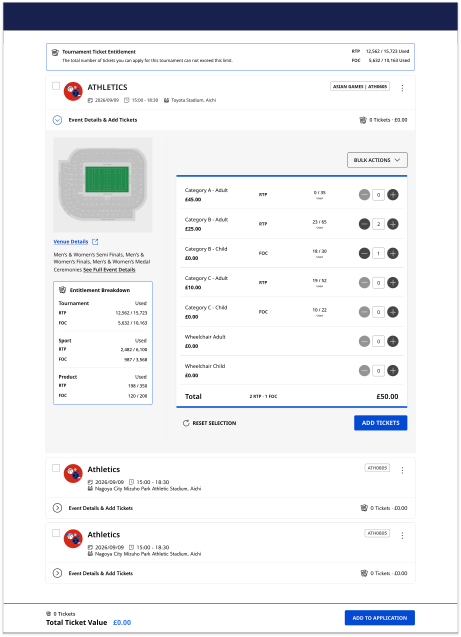
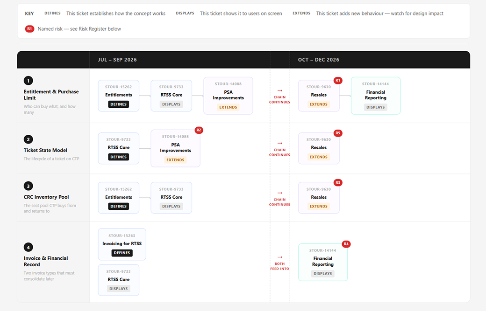

Rugby World Cup 2027 · 24 teams · 52 matches · 2.5M ticket inventory · launching Q3 2027
Designed CTP's first transactional layer — basket, payment, and order — for a platform built only for allocation management. Created a complete end-to-end B2B purchasing journey for Rugby World Cup 2027 corporate buyers, secured in real time against dynamic inventory.
CTP (Client Ticketing Platform) — Ticketmaster's B2B ticketing platform used by sponsors, corporate partners, and rugby unions to manage tournament ticket allocations.
The Problem
Corporate clients had no way to purchase Rugby World Cup 2027 seat inventory directly — the platform was built for stakeholder visibility, not transactional commerce. B2B buyers were forced through manual processes, causing delays, errors, and lost sales during time-critical inventory windows.
01 Context & Stakes
CTP supports purchases from account managers, corporate clients, and group booking coordinators who allocate large blocks of seats across live sports and entertainment events. Unlike consumer fans, these buyers pre-sell those seats to their own clients — a procurement workflow, not a discovery workflow.
02 Problem Definition
Before designing anything new, a heuristic and accessibility audit was conducted across the existing CTP experience. The goal was to surface the violations already present in the platform — issues that would follow us into the new purchasing flow if left unresolved.
When inventory drops unpredictably, the Request→Approval flow introduces too much latency. By the time approval completes, high-demand seats are gone. There is no mechanism for eligible stakeholders to act immediately.
CTP generates a "request entity" for payments — not an order entity. Basket, payment, and confirmation flows are net-new surfaces with no pattern to extend. Every design decision either creates a scalable foundation or a fragile workaround. This was not in the original brief — it surfaced through platform analysis.

Non-union corporates (RTSS) and participating unions (Request→Approval) operate differently. Nothing in the current design explicitly differentiates these flows — a corporate stakeholder could land in the wrong journey entirely.
Market segments, CRC seat pools, and workflow routing are all configurable systems. Design decisions made for RWC 2027 will either scale across the platform or create tournament-specific debt for every subsequent client.
To meet the Rugby World Cup 2027 delivery timeline, the MVP focused on enabling a complete end-to-end purchasing journey for eligible stakeholders. Several adjacent capabilities were intentionally deferred, handled by existing systems, or owned by separate teams to keep the project focused on the highest-impact user and business outcomes.
MVP Constraints
03 Users & Context
Designing for corporate procurement introduced a fundamentally different mental model from consumer ticketing. The challenge was not only to support distinct purchasing behaviors, but also to create a shared platform experience that could serve multiple stakeholder groups with clarity and confidence.

The Corporate Buyer
RTSS Purchase Flow · Sponsors, Commercial Partners, Key Accounts
A goal-driven user focused on securing specific inventory under time pressure. Unlike consumer ticket buyers, they operate within procurement workflows — purchasing in volume, settling through bank transfer rather than card, and requiring invoice access as a primary outcome of the transaction, not a secondary download.

The Union Representative
Request → Approval Flow · Participating Unions
Operates within an established allocation and approval process. As this workflow remained unchanged, the primary design consideration was maintaining clear separation from the RTSS purchasing experience and ensuring users were automatically routed to the correct flow upon login.
04 Discovery & Research
Before introducing new capabilities, I assessed the existing ticket selection experience against usability and accessibility standards to understand where the current design was creating friction and where foundational issues needed to be addressed.

Before exploring interface solutions, I mapped the underlying platform architecture to understand how inventory, entitlement rules, ticket states, and financial systems interacted across CTP. This revealed that RTSS was fundamentally a platform integration challenge rather than a standalone workflow. By identifying upstream dependencies and downstream impacts early, the resulting solution could be designed as a reusable platform capability rather than a Rugby World Cup–specific implementation.
A critical insight emerged early in the project: corporate procurement behaviour differs fundamentally from consumer ticket purchasing. Unlike fans who browse, compare, and explore options, corporate buyers typically arrive with a defined inventory objective and operate under strict time constraints.
This meant many familiar consumer-ticketing patterns were not only unnecessary but actively detrimental to task completion. The experience needed to prioritize operational efficiency through clear purchasing constraints, reduced decision friction, and procurement-focused post-purchase workflows.
Recognizing this distinction established a core design principle: optimize for execution, not discovery.
Corporate buyer, research session, 2022
Corporate buyer, research session, 2025
Before exploring solutions, it was important to understand the platform, business, and operational constraints that would shape the final experience.
Platform Constraints
CTP-Native Experience — The purchasing journey needed to be built entirely within CTP. A planned handoff to an existing Ticketmaster transactional surface was ruled out, requiring every stage — from inventory selection through confirmation — to be designed within the platform.
No Existing Order Model — CTP was built around request management rather than transactional purchasing. The platform did not contain a dedicated order entity, requiring post-purchase and confirmation states to be designed around a future B2B order model rather than existing request-based patterns.
Business Constraints
Configurable Purchase Limits — Purchase limits vary by client segment and are managed through back-office configuration. The experience could not rely on fixed Rugby World Cup values and needed to support changing entitlement rules without design changes.
Dual-Mode Platform — The platform needed to support both RTSS purchasing and the existing Request → Approval workflow. Preventing confusion between these operating models was critical, making workflow separation a core design requirement rather than a routing consideration.
Invoice-Driven Procurement — For corporate buyers, the transaction does not end at confirmation. Invoice access is a primary post-purchase action and needed to be treated as a first-class outcome alongside ticket fulfillment.
Experience Constraints
Basket as Checkout-Time Validation Point — Unlike traditional ecommerce baskets where availability is assumed stable, RTSS inventory remained highly dynamic throughout the transaction. The basket functioned as an inventory-aware staging area: held seats remained in the basket during review, with inventory revalidated at the point of checkout submission. If an item was no longer available at checkout, the buyer received explicit error feedback identifying which selections had been lost — preserving the rest of the basket and allowing recovery without restarting the flow.
Procurement-Paced Post-Purchase — While the purchase decision happens in minutes, the buyer's downstream work (internal procurement, finance reconciliation, etc) happens across days or weeks. Confirmation, invoicing, and order access needed to remain functional and retrievable long after the transaction window closed.
05 Design Principles
Before exploring solutions, I defined three success criteria that would guide the project. Every concept, interaction, and design decision was measured against these principles to ensure the experience remained focused on the core user and business objectives.
The challenge was adapting the technology to support a different customer segment, purchasing model, and platform requirements while maintaining a familiar and scalable allocation experience.
This experience was designed for task completion, not exploration. Buyers arrive with a clear objective and limited time, making unnecessary decisions, navigation, or promotional patterns a source of friction rather than value.
Business rules, purchasing constraints, payment methods, and system states should be driven by configuration rather than event-specific logic. Designing for flexibility ensures the platform can support future tournaments, clients, and operational models without requiring fundamental redesign.
06 Explorations

07 Final Solution
Research guided every design decision. Interactions, information hierarchy, and feature prioritization were shaped by observed user behaviour, platform constraints, and business goals.
Screen 01
Category-based selection over seat map

Decision traced to: Operational Efficiency principle
Best Available allocation optimizes for speed and fairness at scale — surfacing a seat map would have added decision overhead without improving outcomes. The category interface lets buyers express preference (price tier, section type) while the allocation engine handles seat assignment behind the scenes.
Screen 02
Basket holds inventory as staged until checkout submission, where availability is revalidated against the live pool

Decision traced to: Experience Constraint — basket as checkout-time validation point
RTSS inventory is dynamic, but continuously polling availability during basket review would have introduced cognitive churn (items disappearing mid-review) and significant backend load. Instead, the basket holds inventory as staged until checkout submission, where availability is revalidated against the live pool. If a held item is no longer available at that moment, the buyer sees explicit error feedback identifying which selections were lost — preserving the rest of the basket and allowing recovery without restarting the flow.
Screen 03
Bank transfer as the single payment method at launch, designed to extend to card

Decision traced to: B2B procurement reality + Platform Scalability principle
Corporate buyers settle large-volume transactions through bank transfer, not card — it matches how their finance teams approve and reconcile spend. Designing for bank transfer first reflected the actual buyer workflow rather than retrofitting a consumer payment model. The payment screen architecture was designed to accommodate card as a second method in a later phase without restructuring the flow.
Screen 04
Invoice access elevated to a first-class CTA on the confirmation screen

Decision traced to: Invoice-Driven Procurement constraint
For corporate buyers, the transaction does not end at confirmation — the invoice is what allows the buyer to close the loop with internal procurement, finance, and downstream pre-sale operations. Treating Invoice as a primary CTA on the confirmation screen, rather than a secondary download link, acknowledges the real end-state of the workflow. Confirmation states were also designed against a future B2B order entity rather than the existing request-based pattern, ensuring the work scales beyond RWC and integrates cleanly when the order model is implemented.
Screen 05
Two distinct failure states with two distinct recovery paths


Decision traced to: Operational Efficiency principle + edge case design discipline (25 states defined across the journey)
With bank transfer as the only payment method at launch, recovery design carried more weight than in a multi-method consumer flow — a buyer hitting a failure state has no card fallback to switch to. The design distinguishes two failure modes that look superficially similar but require different buyer actions: "Banking details not filled" is caught client-side before submission, with the missing fields surfaced inline so the buyer can correct and proceed without losing context; "Payment failed" is a post-submission rejection from the bank or processor, where the inputs may be valid but the transaction couldn't complete.
See the full flow
After several rounds of UX, accessibility and quality testing I designed CTP's first transactional layer — basket, payment, and order — for a platform built only for allocation management.
08 What shipped and what it unlocked
RTSS is pre-launch. Quantitative time-to-purchase and conversion data will be captured post-RWC 2027 against the existing Request → Approval baseline.
What we know now
18 audit issues resolved across heuristic and WCAG findings before a single new screen was built
25 edge case states defined and designed across the purchase journey
Bank transfer flow validated with corporate buyer stakeholders before payment screen design began
Accessibility patterns aligned with the broader filter and component baseline, ensuring consistency across CTP surfaces
What we'll measure post-launch
09 Reflection
| Topic | Reflection |
|---|---|
|
The real problem wasn't in the brief |
The most important decision of this project happened before any screen was designed: realizing that CTP had no transactional infrastructure at all — no basket, no payment, no order — and that the brief, "build a B2B checkout flow," was actually asking for a transactional capability the platform had never had. If I'd executed the brief as written, I would have shipped four screens on top of a request-based data model and created tournament-specific debt for every future client. The platform analysis before the visual design was the most important hour of the project. |
|
What I'd do differently |
I had limited access to the back-office configuration and CTP team during the design phase. With more deliberate scheduling, more thorough interview prep would have surfaced additional issues to log for future scoping and supported a stronger accessibility review. Beyond the user and product team input, many decisions leaned on past user interactions and the limited responses we received from CTP. A stronger product-mapping approach would have surfaced overlaps between adjacent epics — returns, credit, entitlements — before they surfaced in my designs. |
|
What I'd want to test post-launch |
Four signals matter most. First, time-to-purchase against the legacy approval flow — the target is minutes, not hours, and the gap to baseline is the clearest measure of whether the operational thesis held. Second, error rate at ticket selection — if it's high, the limit indicator placement needs iteration. Third, the rate of "item no longer available" errors at checkout — this is the direct measure of whether the deferred basket-validation choice was the right tradeoff against continuous polling. If the rate is high, the basket needs to surface availability changes earlier; if it's low, the checkout-time validation model held up under live conditions. Fourth, invoice download rate — if it's low, the CTA placement wasn't justified and the outcome framing needs revisiting. |
|
What this taught me about platform design |
Scoping the MVP forced an architectural conversation that wouldn't have happened if I'd shipped the brief. Deferring entitlements, resale, and seat map weren't accommodations — they were the prerequisite for designing a platform capability rather than a tournament feature. The deferred items became the v2 roadmap, and the transactional layer became foundational to how CTP will handle every future B2B client. The bigger lesson: a tournament timeline can be a forcing function for platform investment, but only if you're willing to push back on the brief. |
10 Next Steps
The deferred MVP items became the v2 roadmap, with each feature intentionally scoped out of the initial release based on strategic prioritization.
Gives buyers better view and transparency over the seats being purchased. Once available, it integrates with Best Available and the general ticket purchase flow for buyers who need specific seat selection (premium hospitality, accessibility seating, group block arrangement).
v1 relied on predefined purchase limits. Entitlements introduces dynamic, rule-based purchasing constraints — moving from "this client can buy up to X tickets" to "this client can buy up to X tickets of category Y for matches Z, with overrides under conditions A." This is the most architecturally complex of the deferred items and the one that most expands CTP's capability beyond RWC.
Reserved for a later phase. Once an order entity is live, resale becomes possible as a downstream operation rather than a parallel system.
With RTSS shipped and the transactional layer established, CTP becomes a transactional B2B ticketing platform — not a tournament-specific build. Future tournaments inherit the order model, the routing, the validation checkpoints, and the edge case state matrix. The platform investment compounds across every subsequent client.